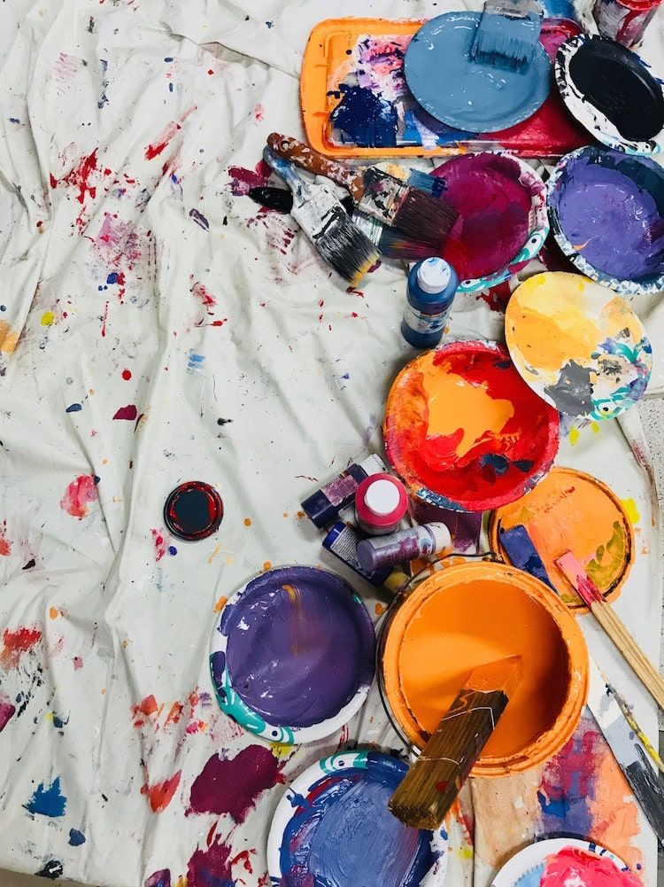
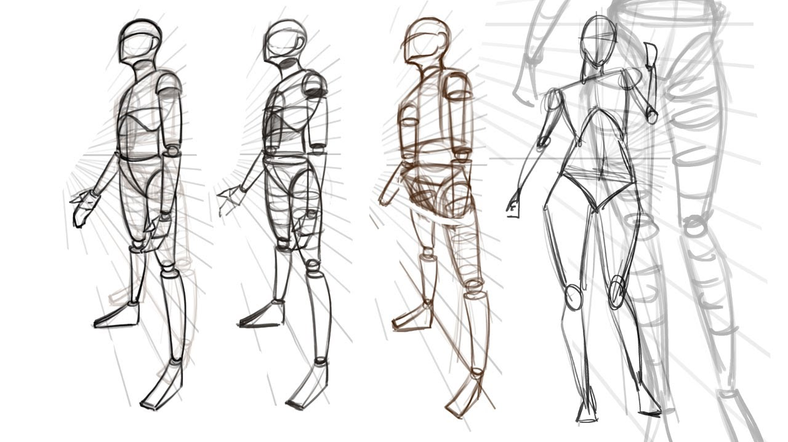
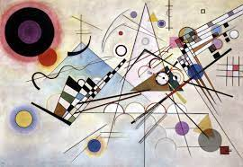

Técnica de pintura profesional
Por: Karla Machado Silver
Categoría: Adolescentes y adultos
Días: Sabado
Horario: 11:00
Curso de 4 sesiones donde identificaremos
y conoceremos las cualidades pictóricas
de la acuarela mediante las principales
técnicas de aplicación.
Registrarte

Anatomía humana
Por: Brenda Tenorio Pérez
Categoría: Adolescentes y adultos
Días: Lunes, Miercoles
Horario: 16:00
El eje principal de la clase es
favorecer el desarrollo integral;
psicomotor, intelectual y socio-afectivo
así como la expresión, usando una gran
diversidad de materiales plásticos
mediante actividades con técnicas
artísticas que les permitirán
incorporar nuevas habilidades.
Registrarte

Niveles de Composición
Por: Brenda Tenorio Pérez
Categoría: Adolescentes y adultos
Días: Jueves, Viernes
Horario: 14:00
Curso de 7 sesiones donde identificaremos
y conoceremos las cualidades pictóricas
de la composición mediante las principales
técnicas de aplicación.
Registrarte